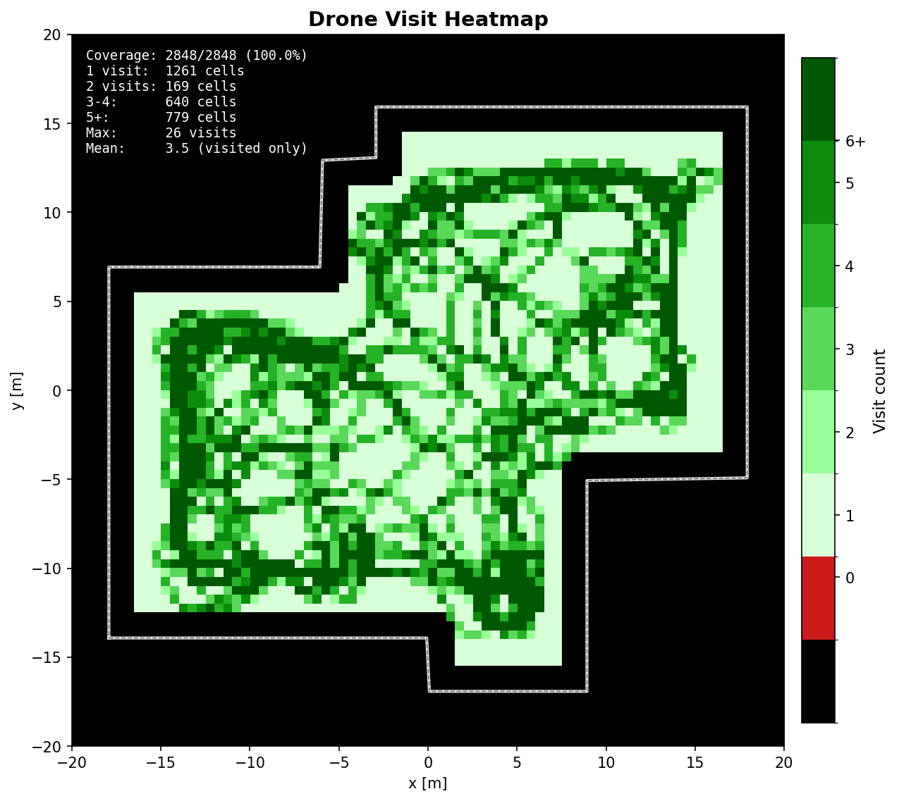
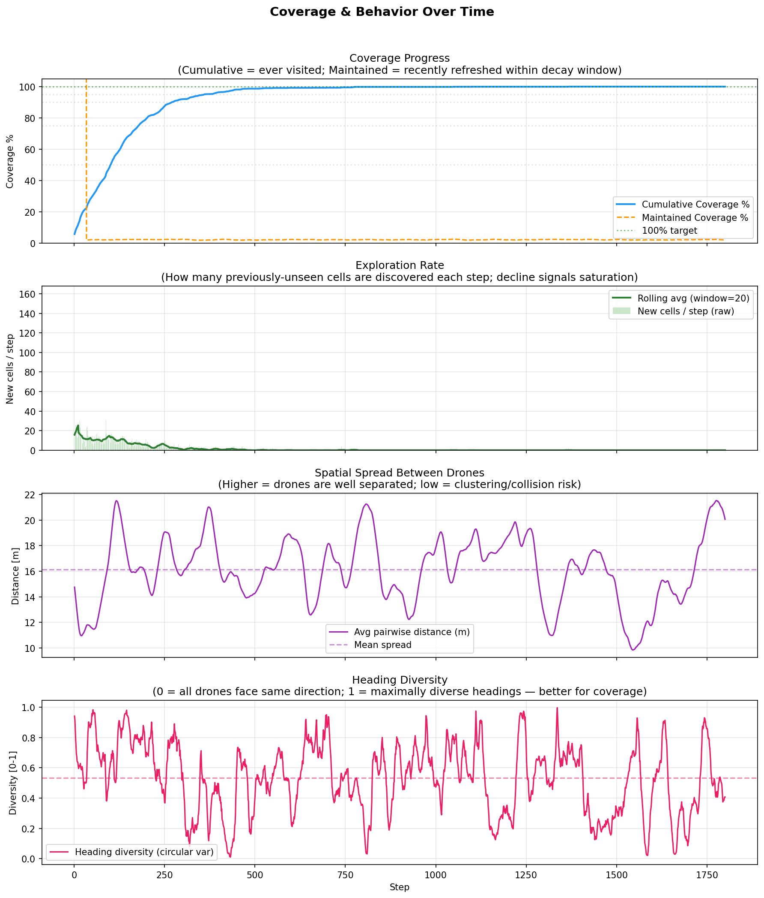
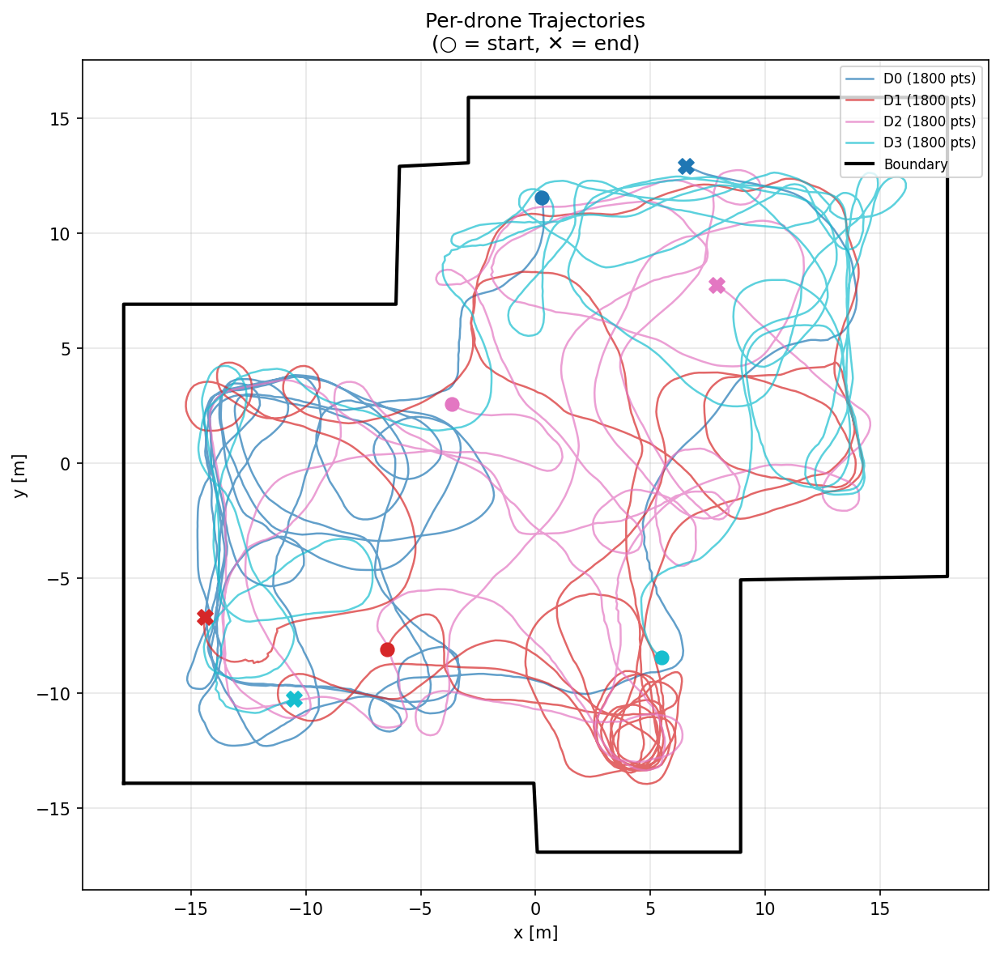
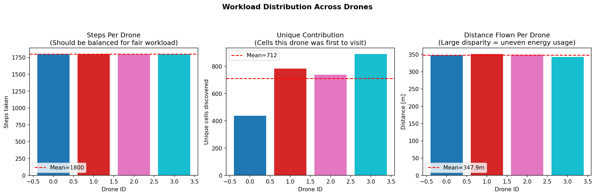
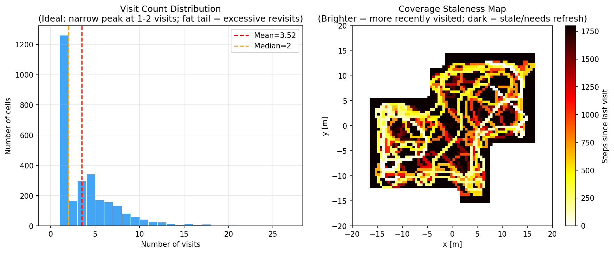
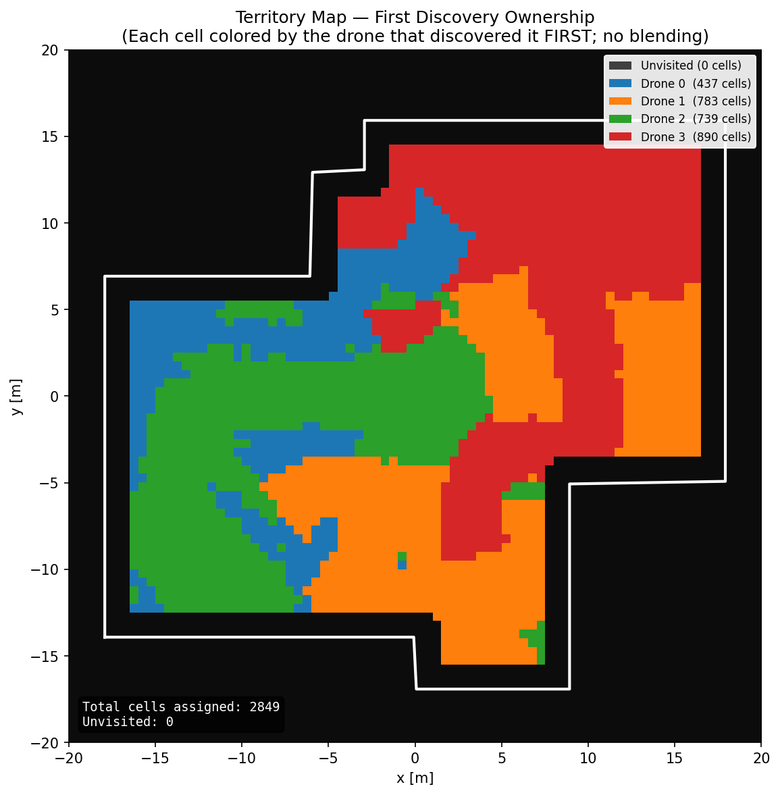
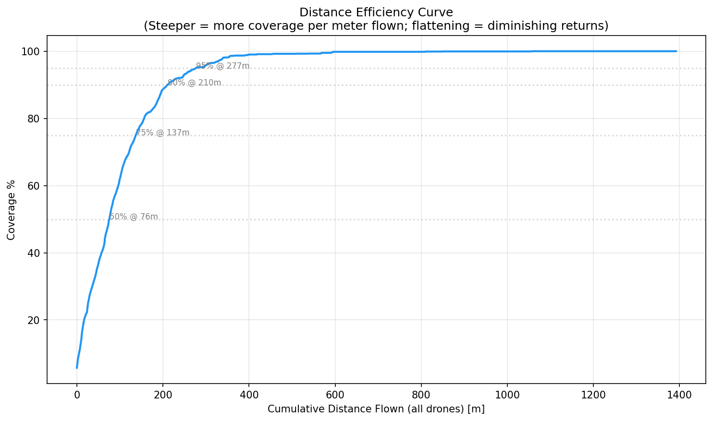
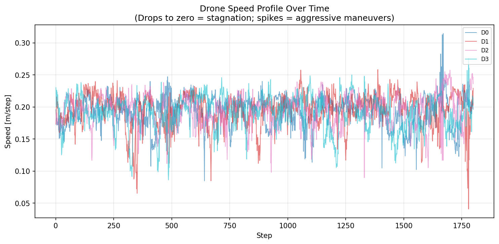

⚠️ Collision Timeline
Each dot represents a timestep where two drones were closer than the safety radius. Color indicates actual distance.

Generated: 2026-05-31 14:20:29
| Metric | Value |
|---|---|
coverage_pct | 100.0 |
cells_covered | 2848 |
total_cells | 2848 |
maintained_coverage_pct | 2.14 |
total_steps | 1800 |
steps_to_threshold | {50: 101, 75: 178, 90: 270, 95: 360, 98: 444, 100: 1367} |
efficiency_score | 0.3956 |
overlap_ratio_pct | 71.63 |
distance_per_new_cell_m | 0.489 |
coverage_rate_slowdown | 0.999 |
collision_count | 0 |
wall_collision_count | 0 |
wall_violation_count | 0 |
total_distance_m | 1391.64 |
drone_distances_m | [348.23, 350.9, 349.76, 342.75] |
energy_estimate | 1694.05 |
circling_events | 0 |
stagnation_events | {} |
drone_workload | [1800, 1800, 1800, 1800] |
workload_std | 0.0 |
unique_contribution | [437, 783, 739, 890] |
avg_inter_drone_spread_m | 16.13 |
avg_heading_diversity | 0.532 |
elapsed_sec | 12.78 |
| Threshold | Steps Required | Status |
|---|---|---|
| 50% | 101 | ✅ Reached at step 101 |
| 75% | 178 | ✅ Reached at step 178 |
| 90% | 270 | ✅ Reached at step 270 |
| 95% | 360 | ✅ Reached at step 360 |
| 98% | 444 | ✅ Reached at step 444 |
| 100% | 1367 | ✅ Reached at step 1367 |
| Drone | Steps | Unique Cells | Distance (m) |
|---|---|---|---|
| Drone 0 | 1800 | 437 | 348.23 |
| Drone 1 | 1800 | 783 | 350.9 |
| Drone 2 | 1800 | 739 | 349.76 |
| Drone 3 | 1800 | 890 | 342.75 |
Shows how many times each cell was visited. Green = visited (darker = more visits). Red = never visited. Black = outside boundary.

4-panel chart: (1) Coverage % progress, (2) Exploration rate (new cells/step), (3) Spatial spread between drones, (4) Heading diversity.

World-coordinate paths of each drone. Circle = start position, X = final position. Good policies show non-overlapping sweeps.

Each dot represents a timestep where two drones were closer than the safety radius. Color indicates actual distance.
3 bar charts: steps taken, unique cells discovered, and distance flown per drone. Red dashed line = mean. Large disparity = unfair workload.

Left: histogram of visit counts (ideal: narrow peak at 1-2). Right: staleness map showing how recently each cell was refreshed.

Colors cells by which drone discovered them first. Shows how well the swarm partitions space. Even coloring = good coordination.

Coverage achieved vs total distance flown. Steeper slope = more efficient. Flattening = diminishing returns (harder to find remaining cells).

Instantaneous speed of each drone over time. Drops to zero indicate stagnation. Consistent speed = smooth paths.

| Parameter | Description |
|---|---|
grid_shape | Grid dimensions (rows × cols). The environment is discretized into this many cells. Finer grids give more precision but require more steps to cover. |
grid_resolution_m | Physical size of each grid cell in meters. Combined with grid_shape, determines the total world size. |
n_drones | Number of cooperative agents (drones) participating in the coverage task simultaneously. |
drone_safety_radius | Minimum allowed distance (m) between any two drones. If closer, a collision event is logged. Typical real-world value: 1.5-3m. |
wall_safety_margin | Minimum distance (m) a drone should maintain from the polygon boundary. Violations indicate boundary-unsafe behavior. |
decay_rate | Per-step multiplicative decay (0..1) for "maintained" coverage. A cell visited T steps ago has weight decay_rate^T. Higher values mean cells stay "fresh" longer. Window ≈ 1/(1-decay_rate) steps. |
world_w / world_h | Physical dimensions of the world in meters. |
max_steps | Maximum episode length. The simulation terminates after this many steps regardless of coverage achieved. |
| Parameter | Description |
|---|---|
coverage_pct | Percentage of active-area cells visited at least once. The primary success metric. 100% = full coverage. |
maintained_coverage_pct | Percentage of cells that have been visited recently enough to still be "fresh" (within the decay window). Important for persistent surveillance tasks. |
cells_covered | Absolute number of unique cells visited at least once. |
total_cells | Number of active cells inside the polygon (excluding margin/inactive areas). |
steps_to_threshold | Number of steps required to reach each coverage milestone (50%, 75%, 90%, 95%, 98%, 100%). "NOT REACHED" means the threshold was never achieved. |
| Parameter | Description |
|---|---|
efficiency_score | cells_covered / (total_steps × n_drones). Represents how productively each drone-step was used. Ideal ≈ 1.0 (every step discovers a new cell). Typical good: 0.3-0.6. |
overlap_ratio_pct | Percentage of total cell-visits that were redundant (cell already visited). Lower = less wasted effort. 0% = perfect (no revisits). |
distance_per_new_cell_m | Average distance (m) flown to discover each new cell. Lower = more efficient paths. |
coverage_rate_slowdown | Ratio of (early_rate - late_rate) / early_rate. 0 = constant rate; 1 = exploration completely stopped. Shows how much the policy struggles in late-game. |
| Parameter | Description |
|---|---|
collision_count | Total number of step×pair instances where two drones were closer than drone_safety_radius. Each occurrence is counted separately. |
wall_violation_count | Total number of step×drone instances where a drone was outside the polygon boundary. |
| Parameter | Description |
|---|---|
total_distance_m | Sum of all distances flown by all drones (meters). |
drone_distances_m | Distance flown by each individual drone. |
energy_estimate | Approximate energy usage = total_distance + 0.5 × total_turning_radians. Penalizes excessive turning which costs battery. |
circling_events | Number of 40-step windows where a drone visited fewer than 8 unique cells (indicating it was circling/stuck). |
stagnation_events | Per-drone count of 20-step windows where the drone visited ≤2 unique cells (completely stuck). |
| Parameter | Description |
|---|---|
drone_workload | Number of steps each drone was active / moved. Should be balanced. |
workload_std | Standard deviation of workload across drones. Lower = fairer distribution. 0 = perfectly balanced. |
unique_contribution | Number of cells each drone was the FIRST to visit. Shows how well drones partition the space. |
avg_inter_drone_spread_m | Average pairwise distance between drones (meters), averaged over all steps. Higher = better spatial distribution. |
avg_heading_diversity | Circular variance of drone headings (0-1). 0 = all flying same direction (bad for coverage); 1 = maximally diverse headings (good). |
| Parameter | Description |
|---|---|
Overall Grade | Weighted score: 50% coverage + 10% efficiency + 10% (100-overlap) + 20% safety (penalized by collisions) + 10% maintained coverage. Grades: A≥90, B≥80, C≥70, D≥60, F<60. |
This dashboard was auto-generated by CoverageValidator.generate_dashboard(). All plots are saved as individual PNGs alongside this HTML file. Metrics are also available in JSON format for programmatic analysis.